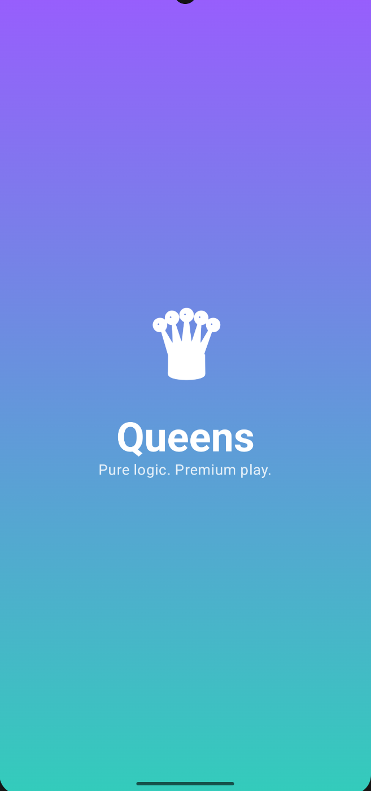

02 // Portfolio
Featured work
A selection of my most significant engineering projects, ranging from AI-powered knowledge systems to high-performance fintech architectures.
01
AI / RAG
FULL STACK
RAG System
A comprehensive, tenant-isolated Retrieval-Augmented Generation web application deployed on Oracle Ubuntu.
View project arrow_forward
ingest.sh
> Uploading documents... > Chunking & Embedding... > RAG Index Ready.
02
KOTLIN
ALGORITHMS
Queens Puzzle App
Premium Android puzzle game featuring deeply modular Clean Architecture and complex algorithmic generation.
View project arrow_forward